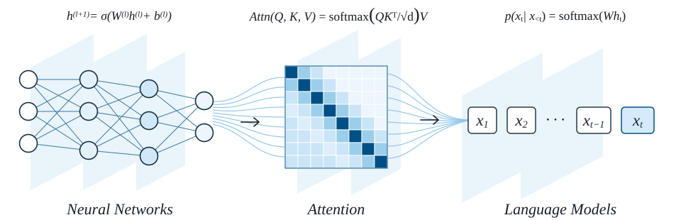

HUST · DEEP LEARNING & LARGE MODELS
深度学习与大模型
Deep Learning & Large Models
从神经网络基础到大模型前沿，
在理论、代码与实践中理解智能。

ABOUT THE COURSE
课程简介
课程从深度学习基础逐步进入大模型的训练、适配和应用，覆盖以下五个主题。
- 神经网络与语言模型：介绍前馈、卷积和循环神经网络，以及统计语言模型、词向量、神经网络语言模型与 Transformer。
- 大模型预训练：讲解预训练语言模型，并围绕训练数据、损失函数和大模型架构梳理预训练过程。
- 微调与强化学习：涵盖提示学习、指令微调、参数高效微调，以及 RLHF、奖励模型、PPO 和大模型强化学习实践。
- 多模态大模型：介绍多模态大模型的架构与训练原理，以及轻量适配方法和相关应用。
- 评估、应用与前沿：讨论评估维度、基准和指标，延伸至智能体、视觉与语音、具身模型、AI4Science 及前沿研究。
教学安排
COURSE SCHEDULE2027春季安排说明
| 节次 | 教学内容 | 学时 | Slides |
|---|---|---|---|
| 01 | 课程简介，大模型概论 | 2 | 待上传 |
| 02 | 神经网络基础1
| 2 | 待上传 |
| 03 | 神经网络基础2
| 2 | 待上传 |
| 04 | 语言模型1
| 2 | 待上传 |
| 05 | 语言模型2
| 2 | 待上传 |
| 06 | 大模型的预训练
| 2 | 待上传 |
| 07 | 大模型的微调1
| 2 | 待上传 |
| 08 | 大模型的微调2
| 2 | 待上传 |
| 09 | 大模型的强化学习1
| 2 | 待上传 |
| 10 | 大模型的强化学习2
| 2 | 待上传 |
| 11 | 多模态大模型1
| 2 | 待上传 |
| 12 | 多模态大模型2
| 2 | 待上传 |
| 13 | 大模型的评估维度、基准与指标 | 2 | 待上传 |
| 14 | 大模型的应用
| 2 | 待上传 |
| 15 | 大模型的延伸
| 2 | 待上传 |
| 16 | 大模型的前沿研究与展望 | 2 | 待上传 |
说明：教学日历修订于 2026 年 11 月 3 日。具体授课日期、地点与考核安排另行通知。